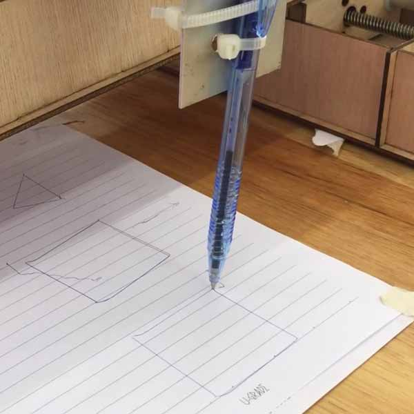
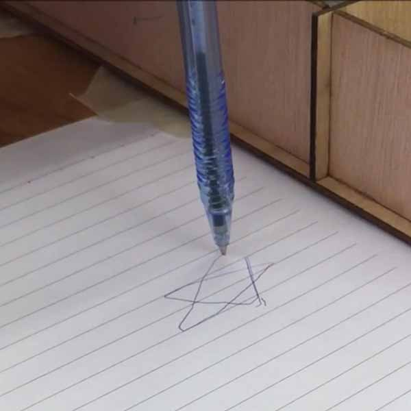
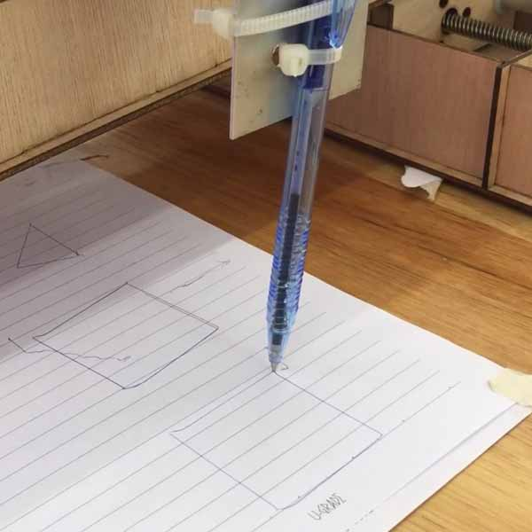
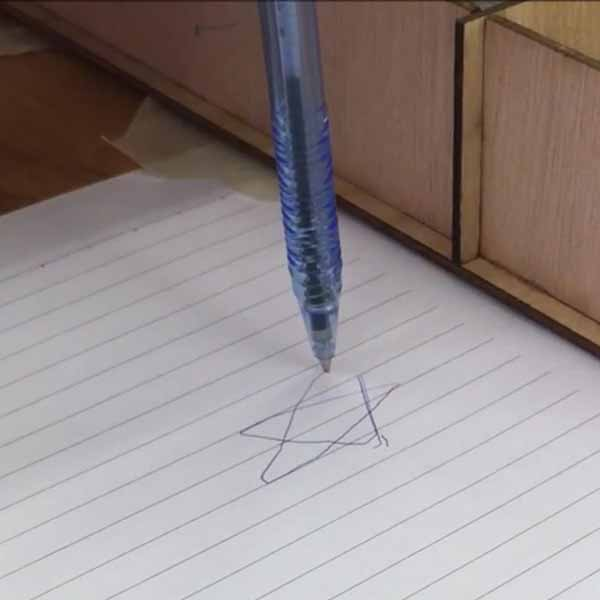

MTM Group 2
Project Requirement
- Make a machine, including the end effector; build the passive parts; and operate it
- Automate the machine
- Document the group project on the group page and individual contributions
Project Scope
Our group comprises of Mark, Tham, Kaichi, and Siew Chin. We have decided to:
- Stage 1: make a xy-axis machine that drives a pen to draw various shapes on a piece of paper.
- Stage 2 : make a moving platform for a target and shoot it down with rubberbands.
Workload Distribution
As this is a group project spread over 2 weeks (30 Mar - 13 Apr 2016), we have decided to split up the workload as such:
- Designing of the housing using AutoCAD - Tham
- CNC Routing of plywood stoppers using StarCAM 2D router - Tham
- Lasercutting the design using Epilog Fusion M2 40 - Kaichi
- Assembly of the stepper motor housing - Kaichi & Tham
- Programming on Mac platform - Mark
- Programming on Windows platform - Siew Chin
- Modifying GUI codes of wxGestalt IDE - Mark
- Designing and making a "gun" which can load rubberbands - Mark
- Milling of FTDI board - Siew Chin
- Soldering of FTDI board - Kaichi & Mark
- Video-editing - Siew Chin
- Documentation and update of group page - Siew Chin
Mechanical Design
Designing the housing
We would be using 2.5mm thick plywood as that is the material we have been given. Tham designed the housing using AutoCAD. We went through a few versions of designing and cutting before being satisfied by the outcome.
Putting the parts together
In this initial phase, we were not too worried with asthetic, as our goal was to make the machine work, which was why we secured some parts using cable ties.
Problem faced during designing stage
The workflow chosen was to first draw the a sketch of the design using pen and paper, then take measurement and move to AutoCAD. Then we import the drawing into PDF so that eventually we move to Coreldraw. However, the measurements in PDF format was not accurate as it turned out to be smaller than the actual size. We have to revise the image to bring it to-size. In the end, we used dxf and dwg which gave a more accurate conversion.
We noticed the poor support for the y-axis housing and decided to improve on it. Kaichi took measurement of the height of the housing, then designed 2 wheels from acrylic, which he cut using a laser cutter. Tham routed the bridging support from cnc router out of plywood. This outcome was much more stable than the single wheel previously.
Machine Design
Setting up the Virtual Machine environment
Referring to the Tutorial on wxGestalt, we found that there are many steps to take to prepare the environment to communicate with the fabnet boards. We need to use Python 2.7 instead of 3.5 because the libraries needed were customized to version 2.7.
- Install Python 2.7
- Install pip on windows
- Install pyserial 3.0.1
- Install pygestalt
- Install FTDI drivers for windows. PDF Instruction
- Install wxPython 32bit for python 2.7
- Execute wxgestalt
Understanding Stepper motor
We are using Nema 17 stepper motor. It is a bipolar stepper motor. It has 200 steps per revolution, 1.8 degrees per step. We need to have a better understanding of how a stepper motor works. Instructables has a good tutorial on How to use a stepper motor.
Understand the Gestalt boards
When connected to FTDI cable, gestalt boards can be daisy-chained to one another. In the command prompt, executing the python file the first time will initialize the nodes and tries to identify the X-axis and Y-axis nodes, indicated by a blue blinking LED on the gestalt board. Press the pushbutton on the gestalt board identifies it as a X or Y or Z node, depending on your codes. Once all the gestalt nodes have been identified, a persistence file, test.vmp containing this information is saved in the project folder. If the machine configuration is changed, test.vmp has to be deleted and the nodes re-identified.
Python Programming
Based on the example files found in ~\pygestalt-master\examples\machines\htmaa\, we learned the various functions of the programme.
- initInterfaces sets up the communication between the software virtual machine and the serial bus.
- initControllers sets up software to control the two nodes for each axis, using the communication protocols defined in 086-005a.py.
- initCoordinates stores the initial coordinates of the machine.
- initKinematics specifies the motor stepping, the number of turns on the leadscrew, and the screw handedness. This appears to be different from the code in 086-005a.py which issues lower level motor commands over the bus.
- initFunctions specifies the operations that can be run on the virtual machine, which current consist of just the move operation—simultaneously moving the x and y axis nodes. There appears to be a stub for a jog function, which will presumably move the motors more quickly.
Stage 1: Drawing Machine
Mapping the Portname - Windows environment
def initInterfaces(self):
if self.providedInterface: self.fabnet = self.providedInterface #providedInterface is defined in the virtualMachine class.
else: self.fabnet = interfaces.gestaltInterface('FABNET', interfaces.serialInterface(baudRate = 115200, interfaceType = 'ftdi', portName = 'COM3'))
Mapping the Portname - Mac environment
def initInterfaces(self):
if self.providedInterface: self.fabnet = self.providedInterface #providedInterface is defined in the virtualMachine class.
else: self.fabnet = interfaces.gestaltInterface('FABNET', interfaces.serialInterface(baudRate = 115200, interfaceType = 'ftdi', portName = '/dev/tty.usbserial-FTXW6Q4L'))
To draw a Square
moves = [[0,0],[-40,0],[-40,40],[0,40],[0,0]]
To draw a Triangle
moves = [[0,0],[10,20],[30,0],[0,0]]
Exploring GUI control
We referred to a past project that was similar to us. Credits goes to Asako from Kamakura. We explored and tried to learn their method by modifying their Tkinter module. This is the standard Python interface to TK GUI toolkit from Scriptics.

To command a mouse movement to draw something:
class Draw:
def on_pressed(self, event):
self.sx = event.x
self.sy = event.y
self.canvas.create_oval(self.sx, self.sy, event.x, event.y, outline = "black", width = 2)
def on_dragged(self, event):
self.canvas.create_line(self.sx, self.sy, event.x, event.y, fill = "black", width = 2)
self.sx = event.x
self.sy = event.y
self.xx = self.sx/1.5
self.yy = self.sy/1.5
#print self.sx
moves = [[self.xx,self.yy]]
# Move!
for move in moves:
stages.move(move, 0)
status = stages.xAxisNode.spinStatusRequest()
# This checks to see if the move is done.
while status['stepsRemaining'] > 0:
time.sleep(0.001)
status = stages.xAxisNode.spinStatusRequest()
def __init__(self):
window = Tkinter.Tk()
self.canvas = Tkinter.Canvas(window, bg = "white", width = 150, height = 150)
self.canvas.pack()
quit_button = Tkinter.Button(window, text = "Exit", command = window.quit)
quit_button.pack(side = Tkinter.RIGHT)
self.canvas.bind("", self.on_pressed)
self.canvas.bind("", self.on_dragged)
window.mainloop()
Draw()
Outcome
 



Stage 2: Hit the target
After we completed the drawing machine, we were inspired and challenged ourselves to develop the model further. For the fun of it, Mark 3d-printed a little bear to act as a target and lasercut a gun that can load rubberbands.
To move the platform
moves = [[0,0],[-100,0],[-100,0],[-100,0],[0,100],[0,0],[-100,100],[0,0],[-50,50],[0,100],[0,0]]
Mistake One
Yes, we made quite a few mistakes too. First, we "borrow" the design of our ftdi interface board from group 1 and it turned out that we had problems communicating, because the board did not have resistors. Then, Mark came out with the idea to solder the additional resistors to the header. We were able to use it for 2-3 days but on 13 Apr, this board decided to act up again. We didn't know why the gestalt boards refused to light up when we connect to power and the computer. Turned out that the ftdi board was short, VCC on ftdi with communicating pin on gestalt board. This resulted in 2 damaged gestalt boards. We decided we had better to re-mill the fdti interface board again, using this design onTutorial page. Lesson learned: taking shortcuts can be costly.
This time, the challenge was to mill the board by importing a png file, instead of what we've previously learned, which was making from scratch using the eagle schematic to board file to gcode to etch file.
To mill PCB board via "Import Image 2D" on CNC USB Software:
- File > Open > Import Image 2D
- Adjust Image Parameters accordingly, in this case:
- Despecle level: 6
- Filter Iterations: 4
- Calibrate XYZ axis
- If cuts are not deep enough, perform a second pass. Set Z-axis 0.05mm deeper.
- Bring XY back to zero by selecting Machine > Go To > Zero XY


Mistake Two
Siew Chin made a noob mistake. Packing the board next to the motor steppers resulted in a disaster of damaging 2 boards because the board short-circuited on contact with metal. One colleague suggested to use electrical tape to protect the base from accidental short in future. Indeed, "Failures are the beginning of success", said one colleague. She will remember this lesson for good thanks to this mistake. Thanks to Steven who took the challenge to troubleshoot the boards, and managed to revived them. Basically he removed and replaced the damaged chip with an xmega328 board, downloaded the firmware from imoyer github and burned the firmware into the new MCU. Indeed we can learn something new with every problem we encounter.
Rooms for improvement to the model
There surely are opportunities for improvements with this design, but those will have to be on hold until we are able to work on this project again.
- Add z axis (to lift up the pen when not drawing).
- Add limit switch so that power will be cut off when stepper motor moves to the end of its range.
- Better design for the end effector, instead of a cable tie.
- Conceal the gestalt boards in the housing, the right way!